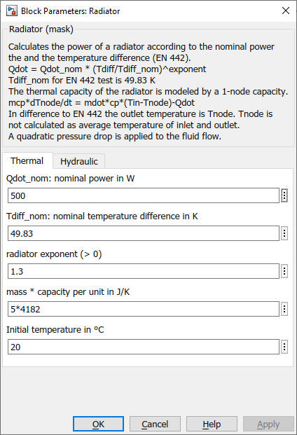

Radiator
Path:
CARNOT/Source/Heat_Exchanger
Purpose:
This block models the radiators of a house heating system. In the
simple_house it may also be used as a
floor heating system.
Description:
The radiator models the time delay of the Troom temperature and the
temperature of the heating cycle.
It calculates the power of a radiator according to the nominal power
the and the temperature difference (EN 442).
The temperature of the radiator is derived by an energy-balance (EN 442 equation):
Qdot = Qdot_nom * (Tdiff/Tdiff_nom)^expo
with the temperature difference
Tdiff = Tnode - Troom
and the nominal difference
Tdiff_nom = Tnode(at test) - Troom(at test)
Remark: The correct calculation uses the logarithmic temperature difference
TdiffLog = (Tsupply-Treturn) / ln((Tsupply-Troom)/(Treturn-Troom))
The simplification of a arithmetic temperature difference is valid as long as
(Treturn - Troom) > 0.7 * (Tsuppy - Troom)
In EN 442 the test conditions are: Tsuppy 75°C, Treturn 65°C, Troom 20°C
Tdiff_nom = 49.833 K (approx. 50 K)
The thermal capacity of the radiator is modeled by a 1-node capacity:
m*c*dTnode/dt = mdot*cp*(Tin-Tnode)-Qdot
The coefficients are:
| c | heat capacity of the radiator | J/kg/K |
| expo | radiator exponent | - |
| m | mass of the radiator | kg |
| mdot: | mass flow rate | kg/s |
| Qdot | thermal power | W |
| Qdot_nom | nominal thermal power at test conditions | W |
| Tin | inlet temperature | °C |
| Troom | room temperature | °C |
| Tnode | radiator temperature | °C |
The radiator exponent 'expo' has typical values for different heating system types:
| type | expo |
| floor heating | 1.0 ... 1.1 |
| convectors | 1.25 ... 1.45 |
| finned tubular heaters (Rippenrohrheizkörper) | 1.25 |
| plain tubular heaters (Glattrohrheizkörper) | 1.25 |
| panel radiator (Plattenheizkörper) | 1.2 ... 1.3 |
| radiator | 1.3 |
In difference to EN 442 the outlet temperature is Tnode. Tnode is not calculated as average temperature of inlet and outlet. To compensate the effect, the Radiator_basic model corrects the temperature:
Tdiff = Tdiff_nom - 5
A quadratic pressure drop is applied to the fluid flow.
Parameters and Dialog Box:

Examples:
Open the example explorer from the Matlab command window
ExampleBrowser
or load the examples via the CARNOT library.
Literature:
EN 442 Radiators and convectors, 2014
Characteristics:
| Direct Feedthrough | : | Yes |
| Sample Time | : | Inherited from driving block |
| Vectorized | : | No |